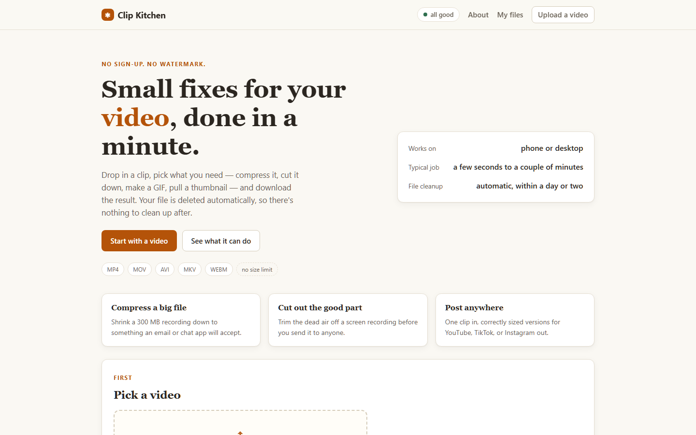

Clip Kitchen.
One upload in, four platform-perfect cuts out. Clip Kitchen kills the re-export treadmill for creators who post everywhere.

The problem
Making a video is one job. Posting it is five. YouTube wants 16:9, TikTok and Reels want 9:16, LinkedIn wants square-ish 1:1 — so creators re-export the same cut four times, eyeball the crops, and re-upload. For anyone posting daily, that's hours a week spent on arithmetic a program can do better.
The interesting part wasn't cutting video — ffmpeg does that. It was making the right cut: keeping the speaker in frame, keeping captions readable, and making the whole thing one click so it actually gets used.
The build
Clip Kitchen is a Flask app with a Python processing pipeline. One upload fans out into per-platform jobs with their own aspect ratio and padding rules; results come back into a queue the user can preview and download from. Heavy lifting happens server-side so a cheap phone can drive the whole thing.
- Queue-based jobs — each export is a job with status, so a 10-minute video doesn't hold the browser hostage.
- Platform presets — safe margins and crop rules per platform, tuned by hand from real posts.
- Deployed on Render — continuous deploys from Git; the free tier survives realistic traffic.
What went wrong first
My first version cropped from center and decapitated half the talking heads I tested with. That taught me the real problem is framing, not trimming — and pushed the product from "video cutter" to "video cutter that doesn't make you re-check every output."
What I learned
Shipping solo means being the user, the designer and the support line at once. The parts I'm proudest of aren't the AI bits — they're the boring ones: progress states that never leave you guessing, and outputs that survive contact with real footage.
If your team ships video anywhere, I'd love to talk — this is exactly the kind of problem I like taking end-to-end.